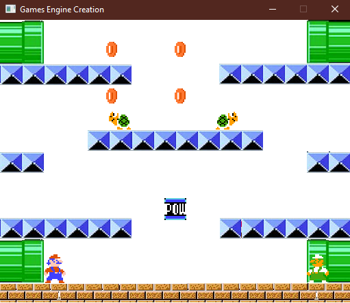

My First Year
Projects
During my first year at Staffordshire University I aimed to create many frameworks and games
which are displayed here.

Rapid Games Prototyping
Marble Madness:
Marble Madness was a 3D framework given to us at the beginning of Semester 1, which I upgraded and worked upon using C# and the Unity Game engine.
The player attempts to move a marble in around a series of levels to reach the goal, whilst avoiding obstacles and using power-ups. For example:
pegs that knock the player back, lava tiles which send the user to the start of the level, spinning doors, and more.
2D Side Scroller:
The 2D Side Scroller was a 2D framework given to us at the beginning of Semester 1, which I upgraded and worked upon using C# and the Unity Game engine.
Similar to Space Invaders, the player shoots at enemy ships whilst avoiding attacks in an aim to reach a new high score. Added functionality includes:
working healthbar, healing items, different enemy types, and enemy waves.

2D Platformer:
At the start of Semester 2, the first prototype we were given to improve was the 2D Platformer. Using C# and the Unity Editor, I improved this framework
into an industry standard prototype featuring an in-depth movement and animation system for both the player, and the AI controlled enemies. Similar to other
platformers such as Mario, or Sonic; there are several power-ups the player can collect along with a suitable score and lives system. There are three different
levels the player can traverse to hone their skills whilst testing all functions of this project.

Top-Down Shooter:
The final and largest prototype for Rapid Games was the top down shooter. This was a 2D bird's eye view shooting game, similar to an RPG or the retro Zelda title.
It includes player movement, featuring a dash; several enemy types that each have different attack patterns and have different statistics; three distinct and appropriate
levels to reflect these mechanics; a boss type enemy that summons objects; and animations that fit each action performed. Additionally, there is an appropriate UI
featured on-screen, and several different menu screens depending on the player's situation.
Fundamentals of Game and Graphical System Development
Pacman:
At the start of Semester 1, I was supplied with a skeleton code for a Pacman game using a custom built library called S2D.
Throughout the 11 week course, I changed and updated the skeleton code from two sprites that do not interact, to a moving and animating Pacman
that can interact with ghosts and munchies whilst playing different sounds and collected power-ups.
OpenGL:
The main project for Semester 2 was to create a 3D graphical environment using the OpenGL custom library. Each week, new features were added, for example:
a moveable camera or spinning objects. Unlike the first semester, we were solely responsible for creating the graphical systems to render these images, and
to create a fully functional camera. These would lay the groundwork to create a video game, if desired.
Games Engine Creation
Mario Project:
Semester 1 lacked a notable project, mainly just smaller programs collating into one larger submission. However, in Semester 2, we were tasked with creating a Mario game
using another custom library called SDL2. Unlike other modules, we were required to create our own engine using this library, meaning we started from scratch.
My iteration features multiple playable characters, along with different enemies and a POW block that acts in a similar way to the original Mario Bros. title. It also
features the old school sound track and sound effects too.
